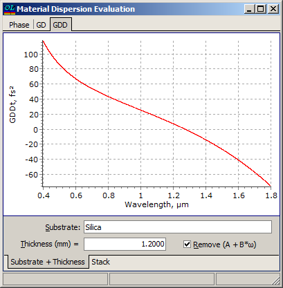
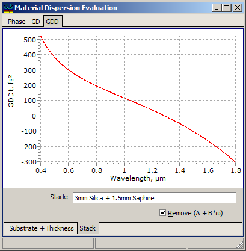

Material Dispersion Evaluation
Material Dispersion Evaluation
Navigation: OptiLayer Menu Commands > Analysis Menu >
Material Dispersion Evaluation
` <pulse_options.html>`__ ` <idh_menu_analysis.html>`__ ` <pre_production_broadband.html>`__
Using this option, it is possible to calculate the dispersion accumulated by a pulse passing through a dispersive medium of a given thickness.

It is necessary to specify the type of medium (taken from the Substrate database) and its thickness.
Optionally, it is possible to exclude the term (A + B*ω) from the phase characteristic and the constant term B from the GD plot. These terms do not affect the GDD characteristic.
If a combination of several media needs to be analyzed, it can be performed with the help of the Stack object.

In this case, all media specified in the Stack object are considered. Coatings, if present, are ignored during Material Dispersion Evaluation.

Note: The Substrate object (Substrate + Thickness mode) or all media in the Stack object (Stack mode) should be represented as formulas, as the calculation of GD/GDD requires differentiation operations.